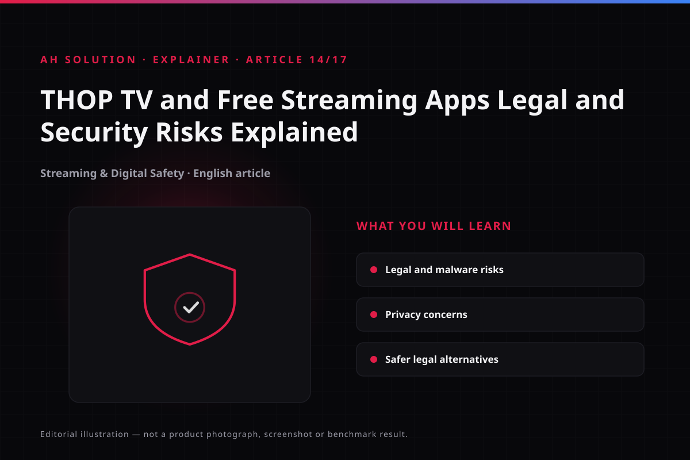

2020 mein viral hue kai aise short clips ne bina license ke content free dene wale apps ka hype create kiya tha. Isi context se related video "THOP TV|| Free NETFILX , FREE AMAZON PRIME , FREE ULLU, Free Free Free !!!!!" ne ek trend ko highlight kiya tha. Lekin yeh article kisi bhi aise app ko promote ya use karne ka guide nahi hai. Iska sirf ek hi purpose hai – aise unofficial free streaming apps se jude legal, security aur privacy risks ko samjhana, taaki aap informed decision le sakein. Video ek historical context provide karta hai; aaj ke time mein bhi wahi core risks valid hain aur inko samajhna zaroori hai.
Original video: THOP TV|| Free NETFILX , FREE AMAZON PRIME , FREE ULLU, Free Free Free !!!!! Video published: 19 July 2020 · Duration: 02:54
Video ke time ka context
Jab yeh video upload hua tha (July 2020), smartphone penetration badh raha tha aur affordable data ke saath free content ka craze bhi tezi se grow ho raha tha. Kai third-party apps ne "sab kuch free" ka promise karke users ka attention grab kiya. Lekin 2020 era ka yeh trend sirf India nahi, globally piracy-linked streaming apps se juda raha hai.
Yeh important hai ki hum video ke time ka context alag rakhein aur aaj ke liye advice dene se pehle yeh samjhein ki platform policies, app store rules aur enforcement landscape time ke saath evolve hota hai. Isliye hum kisi specific app version ya exact availability ka claim nahi karte – hum sirf general category par baat kar rahe hain.
Kya ye apps waada karte hain aur reality kya hai?
Kai unofficial streaming apps ye promise karte hain ki paid platforms ka content bina subscription ke access hoga. Pehle dikhega ki yeh "free" hai, lekin is "free" ka cost kabhi-kabhi hidden hota hai. Kabhi data tracking ke through, kabhi intrusive ads ke through, kabhi unwanted permissions ke through ya phir device security compromise ke through user eventually kuch na kuch pay kar deta hai.
Yeh samajhna zaroori hai – agar koi service officially licensed nahi hai, toh uska "free access" provide karna copyright holders ke rights ke against ho sakta hai. Har region mein laws thode different hote hain, lekin principle same hai: content ka distribution authorized hona chahiye.
Copyright aur legal risks
Digital content ka copyright protect hota hai. Jab koi third-party app paid content ko unauthorized tarike se distribute karta hai, toh yeh copyright infringement ka issue create karta hai. India mein bhi copyright laws ke under aise unauthorized distribution ko serious mana gaya hai aur past mein authorities ne piracy-linked apps aur domains ke against action liya hai. Yeh ek general observation hai – hum kisi ongoing case ka detail nahi de rahe.
Isliye users ko yeh clear rakhna chahiye: bina proper licensing ke copyrighted content stream ya distribute karna legal risk le sakta hai. Is article ka focus risk-awareness hai, na ki kis tarah se infringement ki jaaye. Hum guides/choose-android-apps-safely.html par bhi safe app selection ka framework de chuke hain jo yahan helpful ho sakta hai.
Malware, APKs aur side-loading risks
Jab aap kisi app ko official Play Store se install nahi karte, toh aap unknown source se APK side-load kar rahe hote hain. Ye convenient lag sakta hai, lekin iske saath kai risks aate hain:
- Unverified code: APK mein malicious code ho sakta hai jo background mein run ho.
- Excessive permissions: App jo media stream karne ka dawa karta hai, wahi unnecessary permissions maang sakta hai.
- No automatic security updates: Official store ki tarah timely patches guarantee nahi hote.
- Fake clones: Original app ka clone dikha ke malware distribute kiya ja sakta hai.
Yahi wajah hai ki security experts hamesha recommend karte hain ki apps sirf trusted sources se hi install karein (Google Play Protect bhi on rakhein). Agar aap kabhi bhi side-load karte hain, toh permissions review karna aur device security scan karna essential hai.
Privacy aur data collection
Bina transparency wale apps data collect karne mein zyada aggressive ho sakte hain. Ye data include kar sakta hai device info, IP address, app usage, ads interaction aur kabhi-kabhi sensitive permissions ka misuse bhi. Privacy policy clear nahi hone par yeh pata lagana mushkil ho jaata hai ki data kahan ja raha hai aur kis ke saath share ho raha hai.

Privacy-conscious users ke liye yeh ek major concern hai. Aap apne privacy.html se general digital privacy practices check kar sakte hain.
Reliability, quality aur support
Unauthorized streaming apps ka ecosystem unstable hota hai. Domains block ho sakte hain, streams break ho sakte hain, app crash karta hai, quality fluctuate karti hai. Customer support ka koi reliable channel nahi hota. Kabhi-kabhi update ke naam par app ka behavior badal jaata hai. Ye sab user experience ko unpredictable bana deta hai.
Safer legal alternatives
Agar aap free content dekhna chahte hain, toh legal tareeke bhi available hain. Inme se kuch ad-supported hote hain, kuch library-based hote hain. Availability region par depend karti hai, lekin ye safer options hain:
- Ad-supported legal platforms: Kai platforms ad ke saath free movies/shows offer karte hain.
- Public broadcasters: Kuch broadcasters ka free content catalog hota hai.
- Library services: Local digital libraries ke through bhi content access ho sakta hai.
- Free trials with caution: Kabhi kabhi trials useful hote hain, lekin auto-renewal terms dhyan se padhein.
India mein verified legal options jaise JioCinema aur Netflix India available hain. Har platform ka content library alag hota hai, isliye apne region mein available legal options khud verify karein.
Troubleshooting aur limitations
Is topic ka nature hi risk-awareness hai, isliye "fix" ka traditional meaning yahan apply nahi hota. Lekin limitations samajhna zaroori hai:
- Legal clarity: Har situation same nahi hoti, region-based variation hota hai.
- Security tools limited: Antivirus bhi unknown malicious code detect nahi kar pata kabhi-kabhi.
- No guaranteed safety: Side-loading hamesha risk carry karta hai.
Safety aur privacy
Yahan safety ka sabse bada point hai – prevention. Kabhi bhi unknown APKs se bachein, permissions minimal rakhein, Play Protect active rakhein aur sensitive accounts untrusted apps se connect na karein. Agar aapko lagta hai app suspicious hai, toh turant uninstall karein aur device scan karein.
Frequently asked questions
Kya THOP TV jaise apps use karna hamesha illegal hai?
Nahi, blanket statement dena sahi nahi hoga. Lekin bina licensing ke copyrighted content distribute karne wale apps ke context mein legal risk present ho sakta hai. Jurisdiction par depend karta hai, lekin general rule yahi hai ki authorized sources prefer karein.
Side-load kiya gaya APK safe kyun nahi hota?
Kyunki uska source unverified hota hai, code scan nahi hua hota official store ke through, aur malicious payload ho sakta hai. Isliye risk higher hota hai.
Kya antivirus se pura protection mil jaata hai?
Antivirus helpful hai lekin 100% guarantee nahi deta, especially zero-day threats ya cleverly disguised apps ke case mein.
Safer free alternatives kaise dhundhein?
Official platform websites check karein, Play Store par ad-supported legal apps dekhein, aur guides/choose-android-apps-safely.html follow karein.
Kya is article ka matlab hai video galat hai?
Nahi. Video ek 2020 ka viral trend document karta hai. Hum us trend ke saath jude risks explain kar rahe hain taaki viewers aaj informed ho sakein.
Final recommendations
Agar aap streaming content consume karna chahte hain, toh hum strongly recommend karte hain ki aap licensed aur legal sources choose karein. "Free" ka lure kabhi-kabhi bade hidden costs le ke aata hai – jaise device compromise, privacy loss ya legal uncertainty. Apne device ko secure rakhein, permissions dhyan se dein, aur tutorials.html par hamare security-focused guides bhi check karein.
Resources aur official links
- Google Play Protect — apps scan aur device protection ka official Google tool.
- Unknown sources se apps install karna — Google ka official warning aur settings.
- JioCinema — official India streaming platform.
- JioHotstar — official JioHotstar (Hotstar ka successor).
- Netflix India — official Netflix India.
- Prime Video — official Amazon Prime Video.